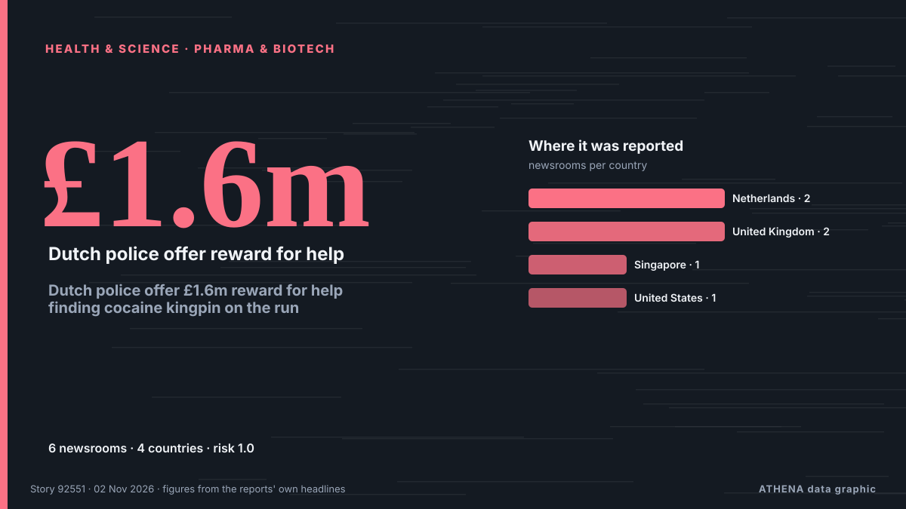

Υγεία, Επιστήμη & Έρευνα
ΧορηγούμενοΠαρουσιάζεται από  Cybernetics and Artificial Intelligence Lab Welcome to the Cybernetics and Artificial Intelligence Laboratory, established at the Department of Business Administration of the National
Cybernetics and Artificial Intelligence Lab Welcome to the Cybernetics and Artificial Intelligence Laboratory, established at the Department of Business Administration of the National
Οι τίτλοι των ειδήσεων παρουσιάζονται στα αγγλικά, όπως δημοσιεύτηκαν.

Φάρμακα & βιοτεχνολογίαDutch police offer £1.6m reward for help finding cocaine kingpin on the run
Dutch prosecutors are offering a staggering £1.6million reward for any information leading to the arrest of Jos Leijdekkers. από The Independent
| 20 Οκτ | 19 |
|---|---|
| 21 Οκτ | 40 |
| 22 Οκτ | 81 |
| 23 Οκτ | 76 |
| 24 Οκτ | 36 |
| 25 Οκτ | 45 |
| 26 Οκτ | 83 |
| 27 Οκτ | 80 |
| 28 Οκτ | 79 |
| 29 Οκτ | 90 |
| 30 Οκτ | 81 |
| 31 Οκτ | 42 |
| 1 Νοε | 29 |
| 2 Νοε | 37 |
Health insurance plan costs on Healthcare.gov to rise by double digits in 2027
Obamacare enrollees could see their health insurance premiums rise by double digits for a second year in a row, according to a report published Friday. από The Hill
NASA hopes the commercial space industry can help save Hubble
Gravity is a cruel mistress, slowly dragging the famed telescope ever closer to its ultimate demise with every day. από The Verge
WHO Chief: Ebola Reminder of Urgent Need to Finish Pandemic Treaty
Deadly outbreaks like the Ebola epidemic raging in the Democratic Republic of Congo show the urgent need to complete an international pandemic treaty, the World Health Organization chief said Monday. από Vanguard
Connecticut senator Chris Murphy hospitalized after stroke
Democratic senator was at his son’s hockey game when he felt a numbness in his arm and was in Johns Hopkins Democratic US Senator Chris Murphy has been hospitalized after suffering a stroke. από The Guardian
NASA Telescope Set to Crash Back to Earth
It's gripping, clear and more informative than “NASA Telescope in Freefall,” while making it clear the re-entry is still expected. από News of Bahrain
SDPI’s Sustainable Development Conference: 4-day moot from Nov. 2-5
Associated Press Of Pakistan SDPI’s Sustainable Development Conference: 4-day moot from Nov. από APP (Associated Press of Pakistan)
Ex-MP Amrin Amin's foodpanda delivery rider outfit for Halloween sparks debate
Tone deaf? Or like dressing up as a nurse or doctor or cop? από Mothership
Police arrest man at Penang airport over RM3.2m cannabis bound for London; RM1.05m drugs seized in Jelutong
GEORGE TOWN, Nov 2 — Police arrested a local man in possession of 40 kilogrammes (kg) of cannabis buds, valued at... από Malay Mail
Samples for two suspected Ebola cases in Nigeria turn out negative
Health authorities in Nigeria confirmed that samples from two suspected Ebola cases tested negative after two rounds of testing. από Arab News
Batters De Zorzi, Hamza return to South Africa test squad
South Africa have named batters Tony de Zorzi and Zubayr Hamza in their squad for the two-match home test series against Bangladesh, but seamer Lungi Ngidi remains sidelined by injury. από Business Recorder
Strange beaked 'hell chicken' is the first fruit-eating dinosaur
vInfernogallus, meaning "hell chicken", is named after its bird-like look and Hell Creek fossil site. από Express Tribune
BDK Organises Breast Cancer Awareness
Free Health Screenings Held for Attendees in Salmabad. από News of Bahrain
Ghana not adequately prepared for Ebola threat — Dr Kingsley Agyemang
The Member of Parliament (MP) for Abuakwa South, Dr Kingsley Agyemang, has raised concerns about Ghana’s preparedness to contain a possible Ebola outbreak, warning that inadequate border health… από MyJoyOnline
Samsung Built the Foldable First. Now Apple Wants the Creator Crowd
The next smartphone war is being fought one creator at a time. από Inc.
Britain shouldn’t apologise for slave trade; Africa profited — Kemi Badenoch
Speaking to broadcasters yesterday, Badenoch described slavery as an evil “in which people from every continent and region participated” από Vanguard
More than 5,000 die from Ebola in DR Congo’s deadliest outbreak
Government data shows that more than 10,000 people have contracted the rare virus. από BBC News
More than 1,500 people awaiting organ donation in Azerbaijan
Thessaloniki's George Papanikolaou Hospital ranks first in Northern Greece for organ donation as doctors highlight the process and its life-saving impact. από Greek City Times
Latvia to chair UN Security Council for first time in its history
Latvia will assume the rotating presidency of the United Nations Security Council for the first time in its history on November 1, serving in the role for one month, the country’s Foreign Ministry… από AzerNews
California doctor gets 15 years for $45m Medicare fraud using fake Botox claims
California doctor Violetta Mailyan has been sentenced to 15 years in federal prison for defrauding Medicare of more than $45 million through fake Botox injection claims. από Times of India
23:28 How Belarus hosted Oleshky evacuees: the humanitarian mission in detail Society
Preparations for the humanitarian mission to Oleshky are nearing completion: the designated routes have been cleared of mines, and the humanitarian convoy has been assembled and is ready to depart. από Ukrinform (English)
Dubai announces major new research and AI campus in Zabeel Park for 30,000 innovators
Dubai announces Nad Zabeel, a major research and AI campus in Zabeel Park, expected to attract over 30,000 participants annually to its programmes and events. από Arabian Business
Rajyotsava celebrated in Raichur
Minister recalls the century-long struggle to bring Kannada-speaking regions under a unified State. από The Hindu
Chong Wei: Making tough decisions for Malaysian badminton comes with criticism
KUALA LUMPUR: Former world number one Lee Chong Wei is prepared to face public criticism as he navigates the challenges of driving change in Malaysian badminton, insisting that difficult decisions… από New Straits Times
It's ACA open enrollment time. Here are the changes for health insurance shoppers
The ACA health insurance marketplaces — find yours at HealthCare.gov — open Nov. από NPR
US inmate Christa Pike says she woke up 'confused and in pain' after failed execution
It is Pike's first public statement since she survived an execution attempt by lethal injection in September. από BBC News
Noel Gallagher’s ex-wife Meg Mathews reveals breast cancer battle and mastectomy
Mathews was diagnosed with the condition in October 2024. από Evening Standard (London)
Halloween chaos in Lancashire as three children arrested and one in hospital after illegal party
Over 200 children attended the party in Lancashire. από Manchester Evening News
Mata Ayer assemblyman Wan Badariah dies at 50
KANGAR: Mata Ayer assemblyman Wan Badariah Wan Saad has died. από New Straits Times
Rare 4.1-billion-year-old Martian meteorite reveals clues to planet's ancient past
Scientists at the University of New Mexico have played a key role in identifying a rare, 4.1-billion-year-old Martian meteorite that provides new evidence that the red planet may have once had a… από Phys.org
South Africa beat Australia by 176 runs in third Test to win series
Join IOL Sport for comprehensive live coverage of the decisive third Test from Cape Town. από IOL
Three ONYX Hotels Win Green Tourism Awards, Bringing “ONYX for Planet” to Life in Chonburi
Amari Pattaya, OZO North Pattaya and Amari Bangsaen recognised for integrating responsible operations, local engagement and measurable sustainability outcomes BANGKOK, THAILAND – Media OutReach… από Laotian Times
Saudi Arabia suspends travel to Kenya, bans visas and entry over Ebola concerns
Riyadh: Saudi Arabia has suspended travel by its citizens to Kenya, halted the issuance of all types of visas to travellers arriving from the country and banned their entry into the Kingdom as part… από Gulf News
Asanko Gold organises health screening for residents in host communities
Over 300 residents of Asanko Gold Ghana Ltd’s host communities received free health screening as part of the company’s Cancer Awareness Month activities. από MyJoyOnline
Australia hammered by Harmer in Cape Town as South Africa take series 2-1
Chasing a target of 288, Australia were bowled out for 111 in the second session on the final day. από Times of India